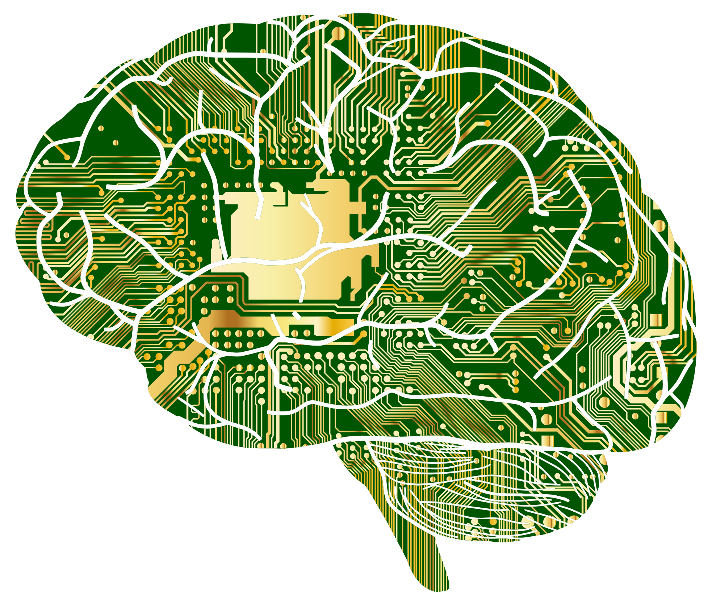
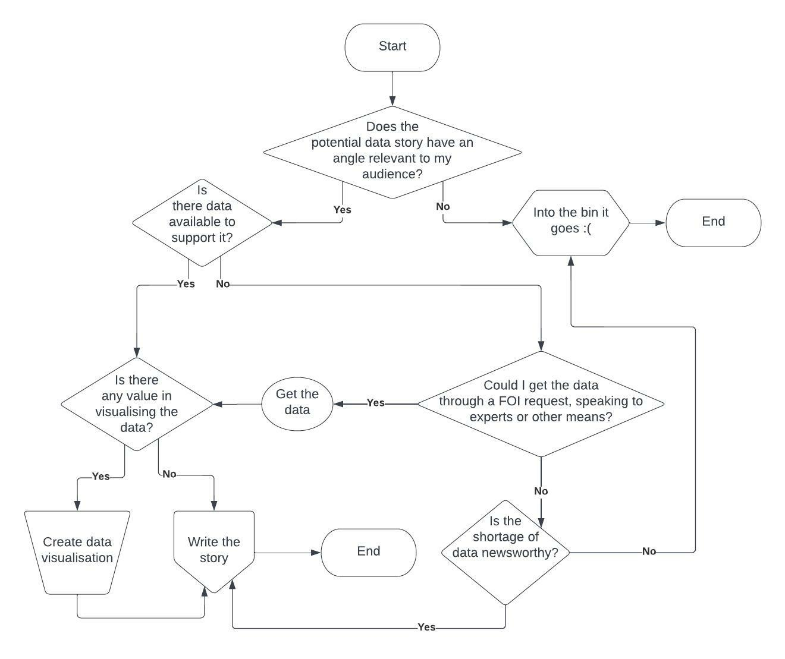

Computational thinking: A brief guide
Computational thinking is, broadly, the process of breaking down complex problems into smaller parts and dealing with each of these parts individually to find solutions to larger problems.
At a glance, it might seem like this term applies specifically to computers. But while it draws from concepts in computer science, Jeannette Wing (2006), who is often credited for popularising the term, emphasises that it is a way that humans – not computers – think.
"Computational thinking involves solving problems, designing systems, and understanding human behaviour, by drawing on the concepts fundamental to computer science."
Wing (2010) argues that this thinking process is not limited to problems encountered in the field of computer science, but can be applied to common real-world scenarios like planning a graduation ceremony or arranging items along a buffet line for maximum efficiency.
Since Wing’s 2006 paper, computational thinking has been increasingly taught in schools. But there is no consensus on exactly how it is defined and models used to apply it vary across disciplines (Shute et al., 2017).
Many definitions include the following elements:
- Decomposition: Breaking down a complex problem into smaller units that can be more easily managed;
- Pattern-recognition: Recognising similarities between or within problems that could help us make predictions or avoid previously made mistakes;
- Abstraction: Focusing on the important information, while ignoring irrelevant details that could be distracting; and
- Algorithm design: Formulating clear rules or steps to solve the problem.
These processes are a useful framework for tackling many of the problems one might face in their studies, work and daily life.
Relating computational thinking to my studies and career
My programme of study, the MSc in Computational and Data Journalism, aims to combine problem-solving skills and an understanding of data, from the field of computer science, with traditional journalistic skills such as storytelling and sense making (Chorley and Mottershead 2020).
Since I was already working as a journalist for six years before coming to Cardiff, my focus for this course is mostly to pick up computer science-related skills that will be useful in furthering my career.
These specifically include developing my abilities in data journalism and examining issues related to algorithmic accountability.
Computational thinking is important for achieving both of these objectives.
Data journalism
When dealing with a large amount of data, it can be daunting for a journalist to know how to start.
The first step is to formulate the right questions. These might include, for example:
- How was this data measured?
- Is the source reliable?
- Have the numbers changed over time?
- Which experts can I approach to put this data into context?
That is an example of decomposition, where the problem is broken down into smaller parts and dealt with individually. Rather than diving straight into an enormous dataset aimlessly, we identify specific aspects of the data which are of interest.
There is also abstraction involved: large datasets often contain a lot of irrelevant information. Cleaning the data by hiding or deleting this surplus information makes pattern-recognition possible – when the extra “noise” is removed, it becomes easier to observe meaningful relationships between salient facets of the data.
Algorithm design can help a journalist decide how to proceed with a story in a more structured way. Take, for instance, this flowchart I created that illustrates – in a simplified form – the decision making that might go into a story involving data.
Computational thinking processes often take place simultaneously rather than sequentially. For instance, when deciding how to analyse a dataset, I might write some pseudocode to outline steps to find the number of instances a word appears in a dataset, or match up different sets of data to see where they might overlap.
While this involves designing an algorithm, there would also be some decomposing of the problem, and abstraction to simplify the steps needed at the same time.
Algorithmic accountability
One of the key functions of journalism has traditionally been to serve as a watchdog for the public by holding those with power to account.
As governments and corporations acquire more power through technology and big data, it has become crucial for journalists to understand the thinking behind algorithms in order to be able to question them and hold their makers accountable.
Computers, after all, only carry out instructions from the people who programme them.
As Diakopoulos (2014) explains, being able to reverse engineer the relationships between inputs and outputs in an algorithm can help journalists shed light on problematic aspects of algorithms such as biases and censorship.
By learning how to think like a computer scientist, I believe I am acquiring the information literacy necessary to be a good journalist in the digital age.
References
- Chorley, M.J. and Mottershead, G. 2020. Bridging the skills gap: innovation in journalism education. 5th World Journalism Education Congress (WJEC 2019), Paris, France, 9-11 July 2019. 5th World Journalism Education Congress: Conference Proceedings. Paris: pp. 860-871.
- Diakopoulos, N. 2014. Algorithmic Accountability. Digital Journalism 3, no. 3, pp 398-415. doi: https://doi.org/10.1080/21670811.2014.976411
- Shute, V.J., Chen, S. and Asbell-Clarke, J. 2017. Demystifying computational thinking. Educational Research Review 22, pp. 142-158. doi: https://doi.org/10.1016/j.edurev.2017.09.003
- Wing, J. 2006. Viewpoint: Computational thinking. Communications of the ACM 49, no. 3, pp. 33-35.
- Wing, J. 2010. Computational Thinking: What and Why? Available at: https://www.cs.cmu.edu/~CompThink/resources/TheLinkWing.pdf [Accessed 27 October 2022]